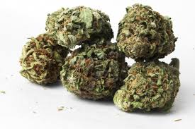
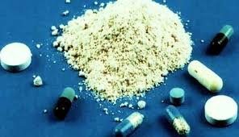
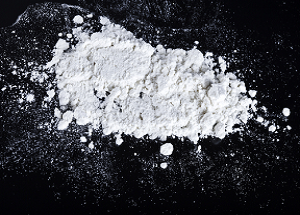
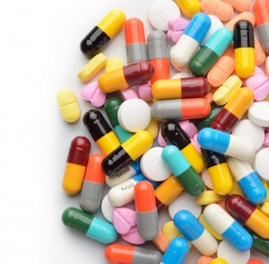
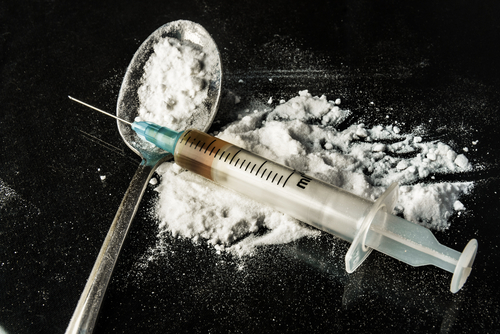
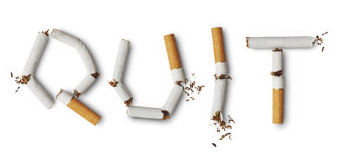

DRUG TYPES
There are a lot of drugs that are circulating in our society, destroying young lives. Below are some of the common drugs that are mostly used by the youth.
Marijuana (Cannabis)
Marijuana (cannabis) is the most commonly used illicit substance. This drug impairs short-term memory and learning, the ability to focus, and coordination. It also increases heart rate, can harm the lungs, and may increase the risk of psychosis in vulnerable people. Research suggests that when regular marijuana use begins in the teen years, addiction is more likely: 1 in 6 users, compared to 1 in 9 among adults. In addition, recent research suggests that heavy cannabis use that starts in the teen years is associated with declines in IQ scores in adulthood.
The main psychoactive (mind-altering) chemical in marijuana, responsible for most of the intoxicating effects that people seek, is delta-9-tetrahydrocannabinol (THC). The chemical is found in resin produced by the leaves and buds primarily of the female cannabis plant. The plant also contains more than 500 other chemicals, including more than 100 compounds that are chemically related to THC, called cannabinoids.
EFFECTS OF MARIJUANA
- Severe anxiety, including fear that one is being watched or followed (paranoia)
- Increased risk of stroke
- Problems with coordination (impairing safe driving or playing sports)
- Decline in IQ (up to 8 points if prolonged use started in adolescent age)
- Impaired thinking and ability to learn and perform complex tasks
- Loss of sense of personal identity
Amphetamines/ Methamphetamine
Amphetamines, including methamphetamine, are powerful stimulants that can produce feelings of euphoria and alertness. Methamphetamine is a white, odorless, bitter-tasting crystalline powder that easily dissolves in water or alcohol and is taken orally, intra-nasally (snorting the powder), by needle injection, or by smoking. Methamphetamine’s effects are particularly long lasting and harmful to the brain. Amphetamines can cause high body temperature and can lead to serious heart problems and seizures.
Regular methamphetamine use significantly changes how the brain functions. Noninvasive human brain imaging studies have shown alterations in the activity of the dopamine system that are associated with reduced motor skills and impaired verbal learning, which may account for many of the emotional and cognitive problems observed in regular methamphetamine users.
Amphetamines/ Methamphetamine are psycho stimulants, meaning they increase a person’s ability to stay awake and even increase focus. Both raise the levels of norepinephrine and dopamine in the brain. When these chemicals are increased, a person will feel a sense of euphoria and an increase in energy.
EFFECTS OF AMPHETAMINES/METHAMPHETAMINE
- Cognitive impairment
- Nausea
- Severe Anxiety
- Errectile Dysfunction
- Hypertension
- Hostility
Cocaine
Cocaine is a short-acting stimulant, which can lead users to “binge”—take the drug many times in a single session. Cocaine use can lead to severe medical consequences related to the heart and the respiratory, nervous, and digestive systems. Cocaine users can also experience severe paranoia, in which they lose touch with reality.
The powdered form of cocaine is either inhaled through the nose (snorted), where it is absorbed through the nasal tissue, or dissolved in water and injected into the bloodstream. Crack is a form of cocaine that has been processed to make a rock crystal (also called “freebase cocaine”) that can be smoked. The crystal is heated to produce vapors that are absorbed into the bloodstream through the lungs. (The term “crack” refers to the crackling sound produced by the rock as it is heated.)
Although health care providers can use it for valid medical purposes, such as local anesthesia for some surgeries, cocaine is an illegal drug. As a street drug, cocaine looks like a fine, white, crystal powder. Street dealers often mix it with things like cornstarch, talcum powder, or flour to increase profits. They may also mix it with other drugs such as the stimulant amphetamine.
People snort cocaine powder through the nose, or they rub it into their gums. Others dissolve the powder in water and inject it into the bloodstream. Some people inject a combination of cocaine and heroin, called a Speedball.
Another popular method of use is to smoke cocaine that has been processed to make a rock crystal (also called "freebase cocaine"). The crystal is heated to produce vapors that are inhaled into the lungs. This form of cocaine is called Crack, which refers to the crackling sound of the rock as it's heated.
People who use cocaine often take it in binges—taking the drug repeatedly within a short time, at increasingly higher doses—to maintain their high. Read more here --> National Institute On Drug Abuse
EFFECTS OF COCAINE
- Anxiety and Paranoia
- Convulsions,seizures and death from high doses
- Bizzare,Erratic and sometimes violent behaviour
- Permanent damage to heart and brain blood vessels
- Liver,kidney and lung damage
- Panic and pychosis
Hallucinogens
The effects of hallucinogens—perception-altering drugs—are highly variable and unreliable, producing different effects in different people at different times. This is mainly due to differences in the amounts and chemistries of active compounds within the drugs. Because of their unpredictable nature, the use of hallucinogens can be particularly dangerous. Examples of hallucinogens include:
MDMA (Ecstasy, “Molly”) (3,4-methylenedioxymethamphetamine) produces both stimulant and mind-altering effects. It can increase body temperature, heart rate, blood pressure, and heart-wall stress.
Ecstasy may also be toxic to nerve cells. It is taken orally, usually as a capsule or tablet. Its effects last approximately 3 to 6 hours, although it is not uncommon for users to take a second dose of the drug as the effects of the first dose begin to fade. Ecstasy is commonly taken in combination with alcohol and other drugs.
Molly—slang for “molecular”—refers to the pure crystalline powder form of ecstasy. Users may seek out Molly to avoid the adulterants or substitutes known to be commonly found in ecstasy, but those who purchase what they think is pure ecstasy may actually be exposing themselves to the same risks, since Molly often contains toxic additives. In fact, Molly is often nothing more than repackaged ecstasy.
LSD is one of the most potent hallucinogenic drugs. Its effects are unpredictable, and users may see vivid colors and images, hear sounds, and feel sensations that seem real but do not exist. Users also may have traumatic experiences and emotions that can last for many hours. Some short-term effects can include increased body temperature, heart rate, and blood pressure; sweating; loss of appetite; sleeplessness; dry mouth; and tremors.
PCP (phencyclidine) was developed in the 1950s as an intravenous anesthetic. Its legitimate use has since been discontinued due to serious adverse effects.
Psilocybin is obtained from certain types of mushrooms that are found in tropical and subtropical regions of South America, Mexico, and the United States. These mushrooms typically contain less than 0.5 percent psilocybin plus trace amounts of psilocin, another hallucinogenic substance.
EFFECTS OF HALLUCINOGENS
- Persistant Psychosis
- Visual Disturbances
- Paranoia
- Hallucinogen Persisting Perception Disorder (HPPD)
- hallucinations
- Stroke
Heroin
Heroin is an opioid drug made from morphine, a natural substance taken from the seed pod of the Asian opium poppy plant. Heroin can be a white or brown powder, or a black sticky substance known as black tar heroin. Other common names for heroin include dope, horse, junk, and smack.
People inject, snort, or smoke heroin. Some people mix heroin with crack cocaine, called a speedball.
Heroin enters the brain rapidly and changes back into morphine. It binds to opioid receptors on cells located in many areas of the brain, especially those involved in feelings of pain and pleasure. Opioid receptors are also located in the brain stem, which controls important processes, such as blood pressure, arousal, and breathing.
EFFECTS OF HEROINE
- Respiratory Illnesses
- Reduced sexual capacity and long term impotence in men
- Loss of memory and intellectual performance
- Depression
- Insomnia
- Muscula weakness,partial paralysis
Nicotine
Nicotine is one of the most heavily used addictive drugs in the world, and the leading preventable cause of disease, disability, and death. Cigarette smoking accounts for 90 percent of lung cancer cases in the world, and about 38,000 deaths per year can be attributed to secondhand smoke. Most cigarettes in the world market today contain 10 milligrams (mg) or more of nicotine. The average smoker takes in 1 to 2 mg nicotine per cigarette when inhaling.
Nicotine is one of more than 4,000 chemicals found in the smoke from tobacco products; it is the primary component that acts on the brain. Smokeless tobacco products (for example, snuff and chewing tobacco) also contain many toxins as well as high levels of nicotine. Nicotine is a naturally occurring, colorless liquid that turns brown when burned and takes on the odor of tobacco when exposed to air. There are many species of tobacco plants, the tabacum species serving as the major source of today's tobacco products. Extensive study shows it to have a number of complex and sometimes unpredictable effects on the brain and body.
Nicotine is absorbed through the skin and mucosal lining of the nose and mouth or in the lungs (through inhalation). Nicotine can reach peak levels in the bloodstream and brain rapidly, depending on how it is taken. Cigarette smoking results in nicotine reaching the brain within just 10 seconds of inhalation. Cigar and pipe smokers, on the other hand, typically do not inhale the smoke, so nicotine is absorbed more slowly through the mucosal membranes of their mouths (as is nicotine from smokeless tobacco). for more information, visit --> Psycology Today & Nicotine & Tobacco Research
EFFECTS OF NICOTINE
- Respiratory Illnesses
- Insomnia
- Denture damage
- Depression
- Flushing, hyperhidrosis, pruritus, rash, urticaria, dry skin
- Chest discomfort, hypertension